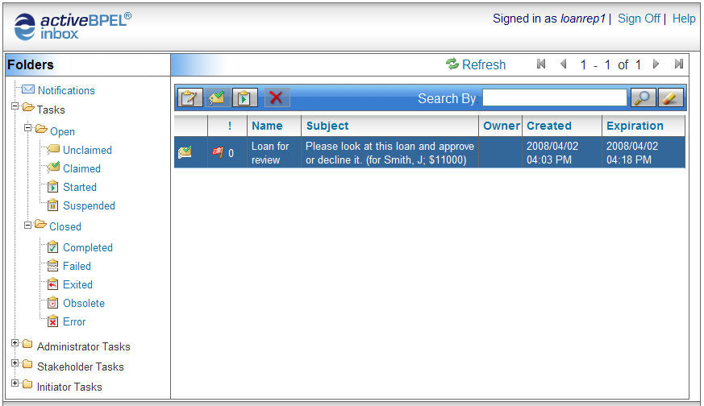

About ActiveBPEL Inbox
Welcome to your ActiveBPEL Inbox, home of tasks for users and other interested parties, such as administrators. The following illustration show an Inbox.

As a user, you can do the following:
- Claim and start a task
- Provide the information requested
- Complete the task
- Optionally take other actions, such as reprioritize a task
- Read notifications
As an administrator or stakeholder, you can do the following:
- View who is working on tasks
- Assign a task to a user
- Work on tasks for which you are the user and take other actions
- Add/delete attachments for notifications
A task initiator can skip a task, if it is marked skippable.
Copyright (c) 2004-2008 Active Endpoints, Inc.